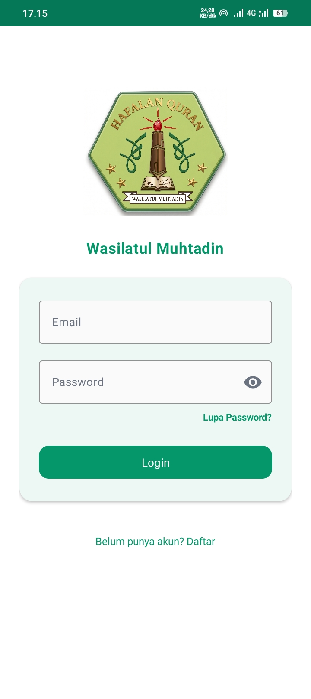
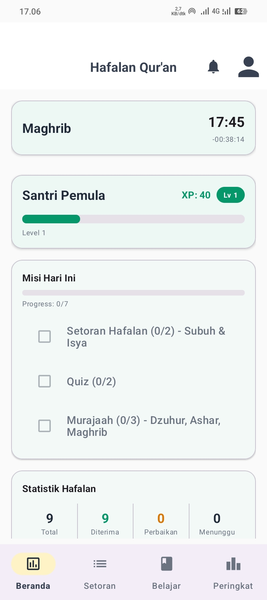
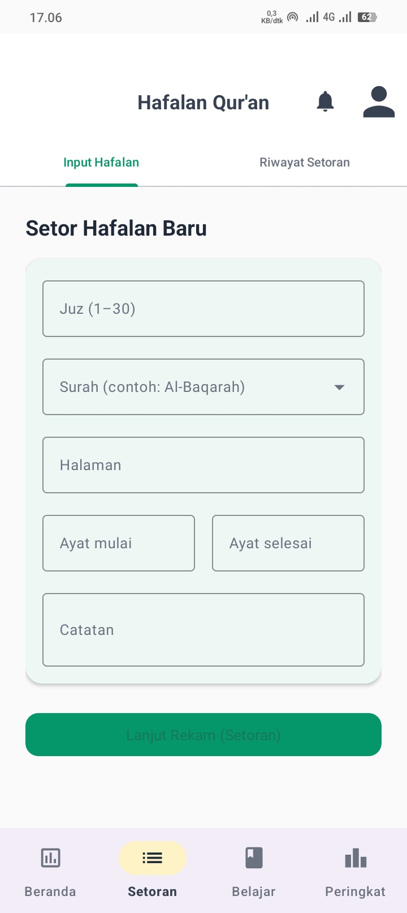
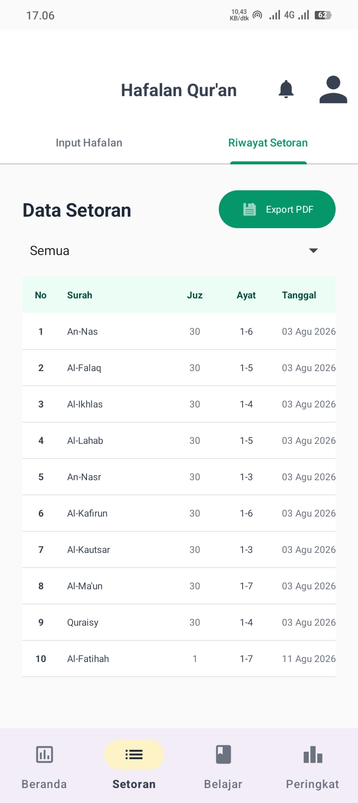
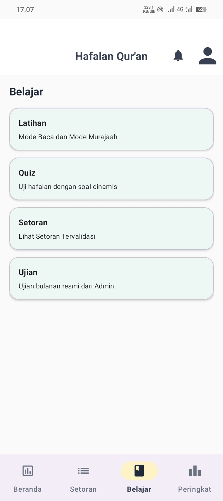

Ini adalah proyek aplikasi mobile yang saya buat untuk membantu santri menyetor hafalan Al-Qur'an kepada ustadz. Biasanya setoran dicatat di buku, jadi saya ingin memindahkannya ke aplikasi supaya lebih rapi dan mudah dilihat kembali. Di bawah ini adalah penjelasan setiap tampilan aplikasinya.

Halaman pertama saat aplikasi dibuka. Santri masuk memakai akun masing-masing.

Halaman utama setelah login. Isinya:
Fitur level dan misi saya buat supaya santri lebih semangat menghafal setiap hari.

Tempat santri mengisi data hafalan yang akan disetorkan.

Berisi tabel semua setoran yang pernah dilakukan: surah, juz, ayat, dan tanggalnya. Datanya bisa difilter dan bisa diunduh jadi PDF lewat tombol Export PDF.

Menu untuk latihan supaya hafalan tidak lupa:
Ada juga menu Peringkat untuk melihat perbandingan XP antar santri.